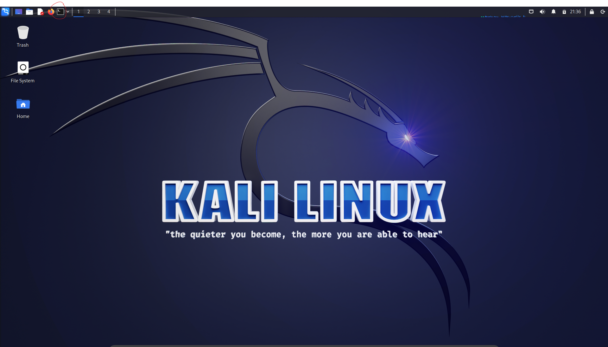
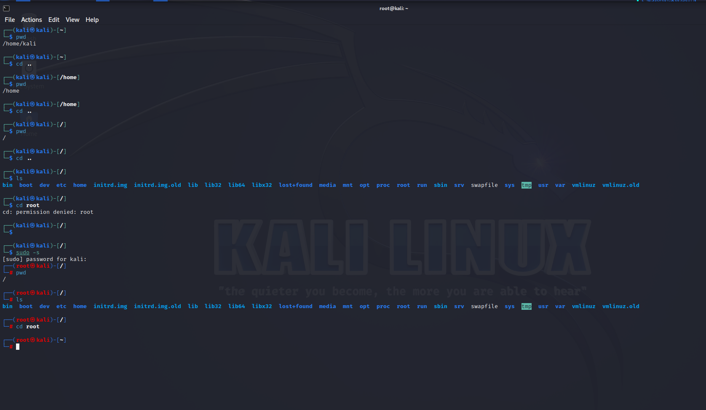
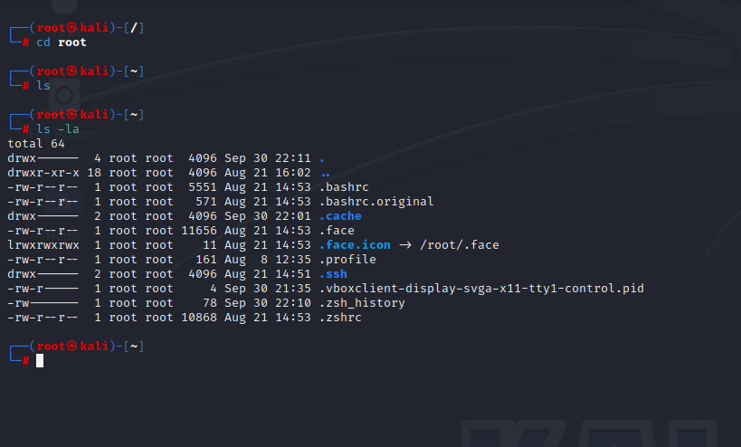
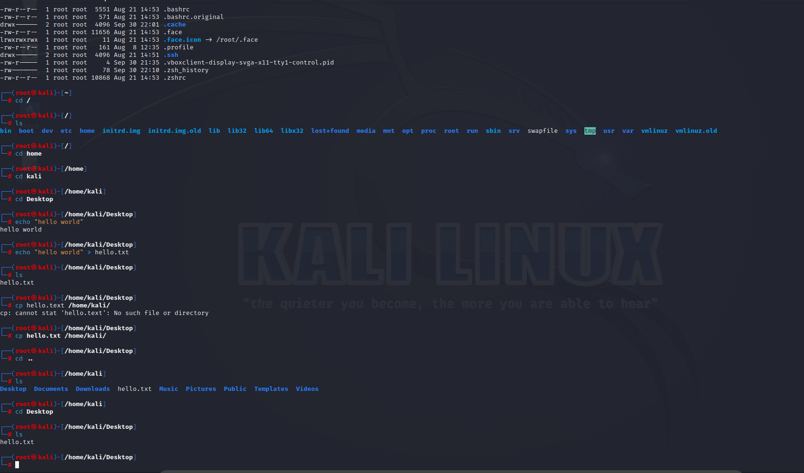
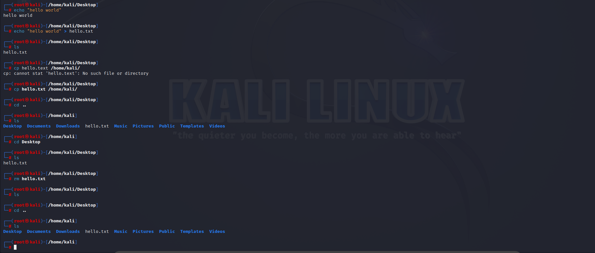
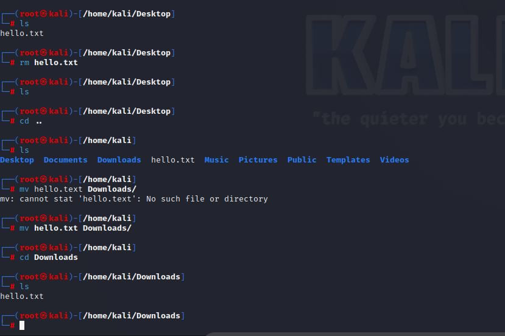
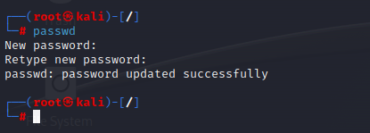

Kali Linux
Overview
As with any operating you will see some familiar things on Kali.
Your screen should look like this:

The top bar has useful icons you may need in the future, from left to right these are:
Application finder
Minimize all windows
File explorer
Notepad
Firefox (web browser)
Terminal
Tabs 1, 2, 3, 4
CPU usage stats
Internet status
Volume
Notifications
Battery status
Time
Lock screen
Power button
The Terminal
We will be living in the terminal when using linux.
The terminal can be accessed in the top left of your screen (circled in red):

The most commands we will use to start at:
Command |
Use |
Notes |
|---|
pwd |
see the file you are at |
present working directroy |
cd |
change file |
change directory |
ls |
listing files and folder in the foler you are at |
listings |
mkdir |
make a new directory |
make directory |
rmdir |
delete an existing directory |
remove directroy |
echo |
display text |
|
cp |
copy a file or directory |
copy |
rm |
remove a file or directory |
remove |
mv |
move a file or directory |
move |
locate |
locate a file or directory |
locate |
updatedb |
update the database that keeps track of files and directories |
update database |
passwd |
change your password |
password |
man |
see the documentaiton foor a given command |
manuscript |
Navigating the File system
Excercise 1
The goal of this excercise it familirize yourself with common terminal commands. You will learn to use cd, pwd, ls, and sudo. You will also get familiar with the basic file structure of your system.
Open your terminal and do the following:
type pwd and hit enter
This will show you where we are at the computer.
type cd .. and hit enter
This will go backwards in the file system.
type pwd and hit enter
This will let you see where you are now.
repeat steps 2 and 3, until you see a /:
The forward slash is is your base folder.
type ls and hit enter:
This allows you to see what folders and files you can access from the current folder
type cd root and hit enter
You may see an error “cd: permission denied: root”. This is because you are not the administrator. In this case do the following:
type sudo -s and hit enter: this will prompt you for the administrator password. If you haven’t changed it, it should still be kali.
type in the password. you wont see the password, but it is being typed. Hit enter when you are done.
type pwd and hit enter.
If you are not in the / directory, navigate to it.
type cd root and hit enter
At this point your terminal should look something like this:

note: from now own, enter after you are instructed to type something.
Now that your are in the root type clear to clear the terminal.
Type ls to see what files are available: you will see nothing is availble.
Navigate to the home folder by typing cd /home/.
Navigate to the Kali folder by typing cd kali.
Type ls
Navigate to the Desktop folder (note this is case sensitive - type Desktop not desktop).
Now type ls /
This will allow you will to see all the files in the base folder.
Type pwd
Type ls
This may be empty as your desktop folders may be empty.
At this point we are in the Desktop folder, but what if we wanted to access a folder that is not nexted underneath the Dekstop?
Say you wanted to access /etc/ type: cd /etc/
Now say we want to go back to Desktop? Type: cd /home/kali/Desktop
We can also see what exists in another folder with out accessing:
Type ls /home/ to see what is in the home directory.
Now make sure you are in the Desktop. What if we wanted to create a new folder? Type mkdir name. Type ls to see it was created.
Lets delete the new folder. Type rmdir name.
Excercise 2
The goal of this excercise it familirize yourself with some more common terminal commands. You will learn to use echo, cp, rm, mv, and locate. You will also get familiar with the use of arrows to navigate to previous commands.
Navigate back to the base folder.
Navigate to the root. Try to see what files exist. Now type ls -la. You’ll see a lot more files that didnt exist before. These are hidden files.

Navigate to your Desktop.
Type echo “hello world”
This is like a Python print statement
Hit the up arrow on your keyboard. The previous comman should show up. Complete it look like: echo “hello world” > hello.txt and hit enter.
This will print the words to a new document called hello.txt. Feel free to go to your desktop, and find the new document. Or type ls to see it got created.
What if we want to move copy the file to a nother location? Type cp hello.txt /home/kali. Navigate to kali and see how it moved a folder.

What if we want to delete the file? rm hello.txt. Notice it only deletes it in the directory you are working on.
At this point my terminal looks like these:

Notice that hello.txt exists in the kali directory but not the Desktop directoy.
Move the text file to a different directoy mv hello.txt Downloads/

Navigate back to the base folder. Now what if we wanted to find our text file? Type locate.
If you get a message of the form plocate: no pattern to search specified, you should be good to go to the next step. If you get a message of the form locate command not found Run:
sudo apt update
sudo apt install mlocate
Once in the base folder type locate hello.txt to find the directoryt in which this file exists.
If you get a message of the form No such file or directroy, run sudo updatedb so kali can locate it in the future.
Excericse 3
The goal of this excercise it familirize yourself with a few more common terminal commands. You will learn to set your password, and use the man command.
Right now we are using the default password, thats not very secure. You can update your password as following:

Remember, passwords wont show up as being typed, but the terminal will read them.
One more useful thing for using the command line, is to use the man command to learn some more about a commnad you are using. Try typing man ls to see how this command works.
Users and Priveleges
Common Network Commands
Viewing, Creating, and Editing Files
Starting and Stopping Services
Installing and Updating Tools
Scripting with Bash